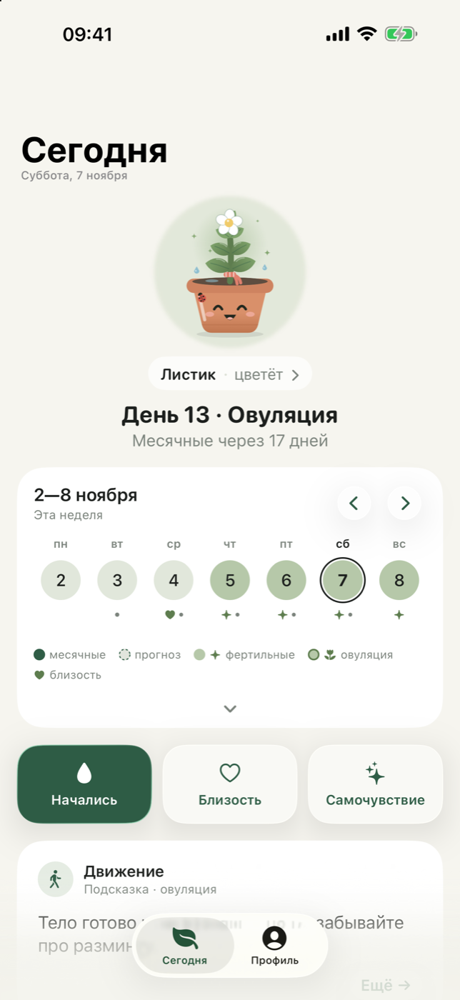

Спокойный дневник цикла
Отметки в два касания, неделя перед глазами и росток, который растёт от вашей заботы о себе. Без аккаунтов, без рекламы, без облака — всё хранится только на вашем iPhone.
Скоро в App StoreiPhone · iOS 26 и новее · русский и английский

Что умеет Листок
Главное — на одном экране
День цикла, фаза и мягкий прогноз. Неделя раскрывается до месяца, а «Все месяцы» показывают год целиком.
Отметки в два касания
«Начались» и «Закончились» на главном экране. Симптомы, настроение, близость и заметка — в листе дня.
Росток растёт с вами
Его настроение следует за фазой, а растёт он от дней заботы. Шесть стадий и гардероб, который открывают достижения.
Достижения без чувства вины
Награждаем привычку заботиться о себе — не тело и не «правильный» цикл. Полученное не отнимается.
Виджеты, Siri, Пункт управления
День цикла на экране «Домой» и блокировки, кнопка «Новый цикл» в Пункте управления, «Листок, какой день цикла?».
Приватность по умолчанию
Нет сети, регистрации, аналитики и рекламы. Face ID, резервная копия в файл, «Здоровье» — по вашему желанию.
Прогноз в Листке — ориентир по вашим прошлым отметкам. Листок не является средством контрацепции и не ставит диагнозов. Если что-то беспокоит — обратитесь к врачу.